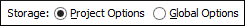

Sharing Transformation Scenarios
The transformation scenarios and their settings can be shared with other users by saving them at project level or by exporting them to a specialized scenarios file that can then be imported. When you create a new transformation scenario or edit an existing one, there is a Storage option to control whether the scenarios are stored in Project Options or Global Options.

Selecting Project Options stores the scenario in the project file and can be shared with other users that have access to the project. If your project is saved on a source versioning system (CVS, SVN, Source Safe, etc.) then your team will have access to the scenarios that you define. When you create a scenario at the project level, the URLs from the scenario become relative to the project URL.
Selecting Global Options stores the scenario in the global options that are stored in the user home directory.
You can also change the storage options on existing transformation scenarios by using the Change storage action from the contextual menu of the list of scenarios.